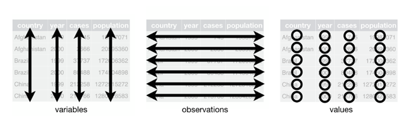

A top-down approach on how to ‘Marie Kondo’ your data sets into Hadley Wickham’s definition of tidy data by introducing pandas and using it’s functionality to introduce Python.
“Tidy datasets and tidy tools work hand in hand to make data analysis easier, allowing you to focus on the interesting domain problem, not on the uninteresting logistics of data.” - Hadley Wickham, Fellow of the American Statistical Association
Marie Kondo famously asks us to clean our homes/spaces, discarding things that do not bring us joy and treasuring things that do. Hadley Wickham’s papers shows us how to translate that philosophy into messy datasets, and create ones that instead of bringing panic, bring joy. Tidy data has become the standard format for science and business because it allows people to easily turn a data table into graphs, analysis and insight.
The purpose of this repository is to help users coming from Excel, to create tidy data sets using Pandas by working through examples that deal with various messy datasets used in Wickham’s paper. Through the process of reading messy data, processing into tidy data and then performing basic analysis, it will also help with general better practice for data management.
The big advantage of Tidy Data is that it makes a clear distinction between a variable, an observation and a value. In this way, all data is standardised which makes it easier to collaborate on. Whether thinking about collaborators as your current colleagues, your future self, or future peers, organising and sharing data in a consistent and predictable way means less adjustment, time, and effort for all.
The Pros and Cons of Tidy Data
If you’ve read this far and are sitting there questioning why you would want a long table instead of a wide excel table where all column headers can be seen, well, the short answer is that not all data needs to be tidy. As Marie Kondo says, “If it sparks joy, keep it with confidence”. Both tidy and messy data are useful. Choose the format that makes analysis easier. Tidy data is simply another tool to keep sharp, so that when it is needed, you can put it to good use.
| Because tidy data is a standard way of structuring a dataset, it is easy for an analyst or a computer to extract needed variables. |
Efficient storage for completely crossed designs which can lead to efficient computation if desired operations can be expressed as matric operations. |
| Many analysis operations, including all aggregation functions, involve all of the values in a variable. |
Presentation |
|
Easier data capturing |
What is Tidy Data?
According to Wickham, in a tidy data set, every column is a variable, every row is an observation and every cell is a single value.

Messy datasets, by extension, violate these 3 rules in some way. The five most common problems are:
- Column headers are values, not variable names.
- Multiple variables are stored in one column.
- Variables are stored in both rows and columns.
- Multiple types of observational units are stored in the same table.
- A single observational unit is stored in multiple tables.
Essentially, we want to take a wide dataset and transform it into a long one. Consider the following table.
| John Smith |
- |
2 |
| Jane Doe |
16 |
11 |
| Mary Johnson |
3 |
1 |
The information has been presented in a common way, however, it could be reorganised making the value, variables and observation more clear, as seen below.
| John Smith |
A |
- |
| John Smith |
B |
2 |
| Jane Doe |
A |
16 |
| Jane Doe |
B |
11 |
| Mary Johnson |
A |
3 |
| Mary Johnson |
B |
1 |
Where to go from here
- Download the repo
- Read through Hadley Wickham’s paper on Tidy data. While this post has summarized some of the paper, going through the examples will help you hugely when working through the exercises.
- Go through ‘README’ carefully and use the extra resources on pandas as needed.
- Exercises 1 through to 4b, gradually provide you with less and less scaffolding, work in each notebook to try and create tidy data sets. To check your answers, use the solutions file.
- Have fun bringing joy to your data sets!